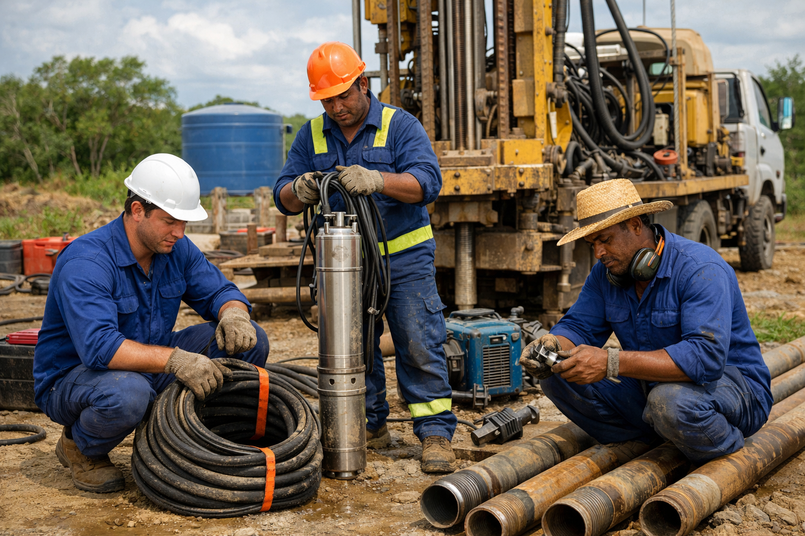

El shaday Poços Artesianos
Empresa especializada em perfuração e construção de poços artesianos e semi-artesianos, oferecendo serviços relacionados à captação de água subterrânea.
Solicite seu orçamento agora no WhatsAppNossos Serviços
Perfuração de Poço Artesiano
Perfuração especializada de poços artesianos com tecnologia moderna e equipe qualificada para garantir captação de água subterrânea.
Solicitar orçamentoPerfuração de Poço Semi-Artesiano
Soluções em perfuração de poços semi-artesianos adequadas para diferentes tipos de propriedades e necessidades.
Solicitar orçamentoManutenção Preventiva
Oferecemos manutenção preventiva e corretiva para garantir o funcionamento perfeito do seu sistema de captação.
Solicitar orçamentoSobre El shaday
Empresa especializada em perfuração e construção de poços artesianos e semi-artesianos. Oferecemos soluções completas relacionadas à captação de água subterrânea com qualidade e profissionalismo.
Informações da Empresa
- Razão Social: Elshaday Poços Artesianos LTDA
- CNPJ: 63.928.990/0001-42 Fale com a gente

Entre em Contato
Estamos prontos para atender você. Fale conosco e solicite um orçamento sem compromisso!